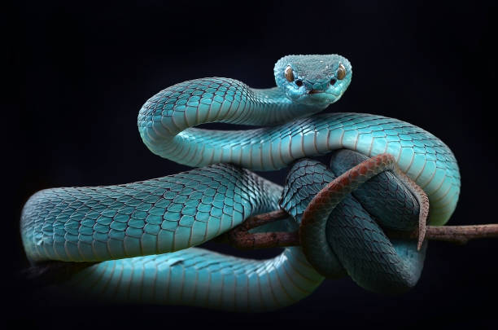
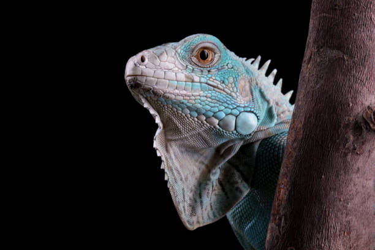
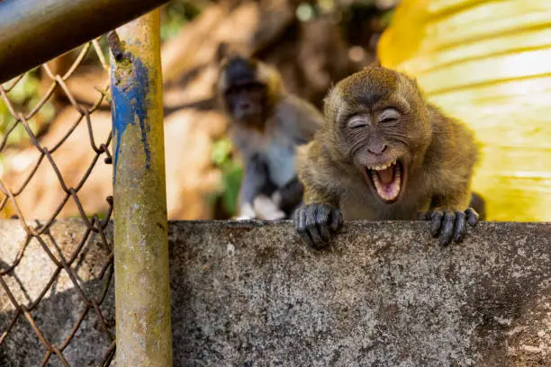

Créditos y Agradecimientos
Este proyecto fue creado como una galería interactiva de animales. Agradecemos a las siguientes plataformas por las imágenes utilizadas:
La inspiración para los filtros y efectos proviene del uso de propiedades avanzadas de CSS como filter, transform, transition y @keyframes.
Collage de inspiración


